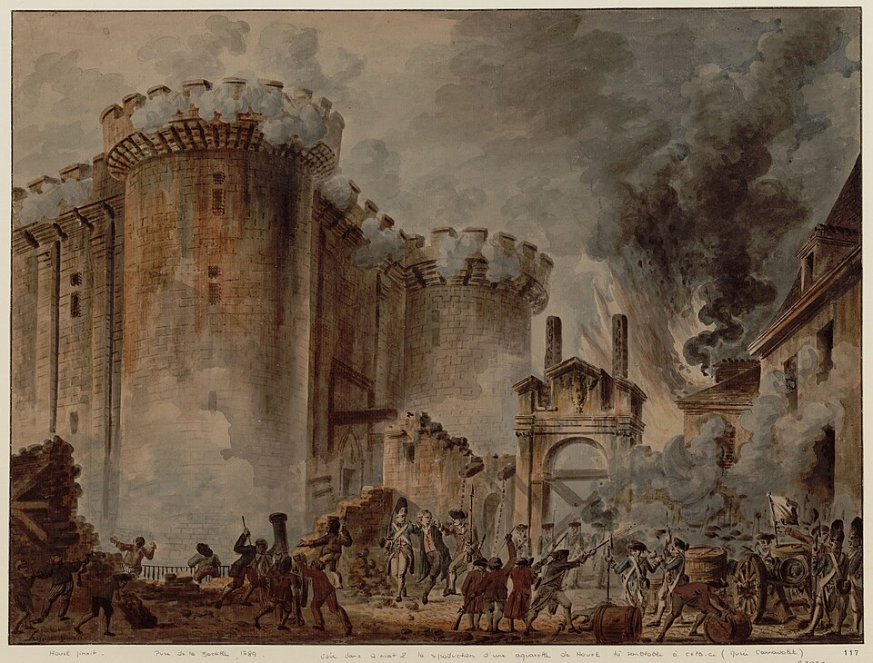

El pueblo de París toma la Bastilla
Una multitud armada asaltó la fortaleza-prisión símbolo del poder absoluto del rey. La guarnición capituló al caer la tarde. La ciudad es un hervidero y nadie se atreve a predecir dónde termina esto.

La vieja fortaleza de la Bastilla, ocho torres de piedra que desde hace cuatro siglos vigilan el arrabal de San Antonio, cayó esta tarde en manos del pueblo de París. Desde la mañana, millares de vecinos —artesanos, tenderos, jornaleros, y no pocos soldados pasados a la causa— rodearon los muros reclamando la pólvora allí almacenada. Tras horas de tiroteo y decenas de muertos, el gobernador De Launay ordenó bajar el puente levadizo. La multitud no le perdonó la jornada: su cabeza recorrió las calles clavada en una pica.
El asalto corona semanas de fiebre. El precio del pan asfixia a los pobres, el reino está en bancarrota y los diputados del llano, reunidos por su cuenta en una Asamblea Nacional, han jurado dar a Francia una constitución. El rey Luis XVI creyó zanjar la crisis rodeando París de tropas y despidiendo al ministro Necker, único en quien el pueblo confiaba. Consiguió lo contrario: la ciudad entera se armó.
Para entender la jornada hay que mirar el pan y mirar Versalles. La cosecha del año pasado fue un desastre y el pan se lleva hoy más de la mitad del jornal de un obrero, cuando lo hay. En Versalles, entre tanto, los Estados Generales convocados en mayo —cosa no vista en ciento setenta y cinco años— se le fueron al rey de las manos: los diputados del estado llano, hartos de contar votos por orden y no por cabeza, se proclamaron Asamblea Nacional y juraron en la sala del Juego de Pelota no separarse hasta dar una constitución al reino. Cada regimiento que el rey acerca a París es leña en ese horno.
La mecha la encendió el domingo un abogado sin pleitos, Camille Desmoulins, trepado a una mesa del Palais-Royal con una pistola en la mano, gritando que el despido de Necker era la señal de una San Bartolomé de patriotas y llamando a las armas. Desde entonces la ciudad se cubrió de escarapelas, y esta mañana la multitud vació el arsenal de los Inválidos: más de treinta mil fusiles, pero sin pólvora. La pólvora estaba en la Bastilla, y ésa es la aritmética completa del asalto: no se atacó una prisión por sus siete presos, sino un polvorín por sus doscientos cincuenta barriles.
Dentro de la prisión, símbolo temible del capricho real, se hallaron apenas siete presos. Poco importa: lo que se derribó hoy no son muros sino un miedo. Cuentan que esta noche, en Versalles, el rey preguntó si se trataba de un motín, y que el duque de La Rochefoucauld le respondió: «No, sire: es una revolución».